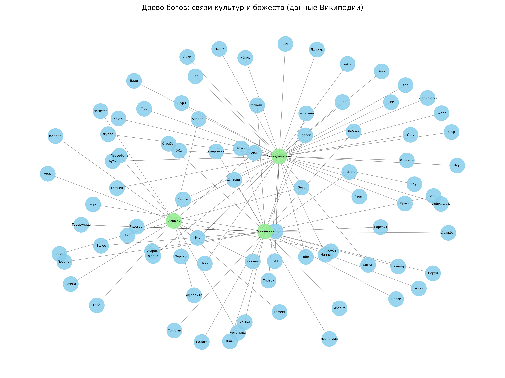

Что общего у культур, которые никогда не встречались?
Анализ славянского, скандинавского и греческого
пантеонов.
Мы спарсили мифологии трёх великих культур с Википедии, собрали описания богов
и вывели их на этот сайт. Данные обновляются скриптом parser.py
и автоматически подгружаются в карточки и карусели ниже.

Сетевой граф на основе спарсенных данных (NetworkX).
Узлы показывают связи между культурами и богами из parsed_mythology_data.csv.
Данные загружены из parsed_mythology_data.csv через mythology_data.js
Все записи из спарсенного датасета
Гроза была самым пугающим и неконтролируемым природным явлением. Звук грома ассоциировался с гневом небес, а молния — с божественным оружием. Поэтому громовержец часто занимает место верховного божества.
Процесс прядения в древности считался сакральным. Нить рождается из кудели (рождение), тянется (жизнь) и обрывается (смерть). Норны, Мойры и Макошь управляют судьбами именно с помощью веретена.
Смерть ассоциировалась с отсутствием солнца и тепла. Погребение в землю сформировало образ царства Аида, Хельхейма или царства Марены как мест, лишенных света и радости жизни.
Животные олицетворяли силы природы. Вороны Одина — мудрость, орел Зевса — власть небес, медведь Велеса — силу леса. Боги заимствовали черты тотемных животных древних племен.
Локи, Гермес, Велес — они нарушают правила. Людям были нужны боги, которые объясняли бы случайности, хитрость и непредсказуемость жизни, а не только строгий порядок.
Древние люди видели, как солнце "движется" по небу. Изобретение колеса и колесницы стало технологическим чудом, поэтому Аполлон, Даждьбог и Соль передвигаются именно на небесных колесницах.
Бросьте виртуальные руны — выпадет случайный бог из спарсенной базы данных.
Загрузка выводов из спарсенных данных...